|
| Организация ввода/вывода информации. Механизм прерываний |
|
Цель работы:
изучить основные приёмы, используемые при организации обмена данными через порты ввода/вывода (I/O).
|
| Краткие теоретические сведения |
|
Порты I/O относятся к периферии МК и являются средством его взаимодействия с внешними устройствами. Каждый порт имеет три регистра:
DDRx, PINx, PORTx, где "x" - имя порта (A,B,C,D и т.д.),
количество которых различается, в зависимости от модели контроллера.
- DDRx определяет направление передачи данных порта на ввод либо вывод. Запись 0x00 настраивает порт на ввод данных. Например, запись в
регистр DDRA значения 0b11111100, настроит нулевую и первую линии порта А на режим ввода, а остальные на вывод;
- PINx - регистр, в который читается состояние логических уровней на выводах контроллера;
- PORTx – регистр, из которого данные попадают на соответствующие выводы контроллера при выводе.
Вывод данных из контроллера производится командой out, а ввод – командой in (например, in r16,PINA, или out
PORTB,r16). При этом соответствующие выводы предварительно должны быть настроены на ввод либо на вывод данных.
Для непосредственной работы с линиями портов ввода/вывода удобно пользоваться командами sbi, cbi и sbis, sbic. Первая устанавливает
указанный бит в порту, а вторая сбрасывает. Например:
cbi PORTA,7 ; обнулить 7-й бит в регистре ввода-вывода PORTA
sbi PORTB,6 ; выставить в "1" 6-й бит в регистре ввода-вывода PORTB
|
|
sbic проверяет состояние разряда регистра ввода/вывода. Если разряд сброшен, команда, следующая за
sbic Address, bit пропускается. sbis наоборот, пропускает команду,
следующую за sbis Address, bit если разряд установлен. Следует помнить, что эти команды актуальны только в
пределах пространства регистров I/O.
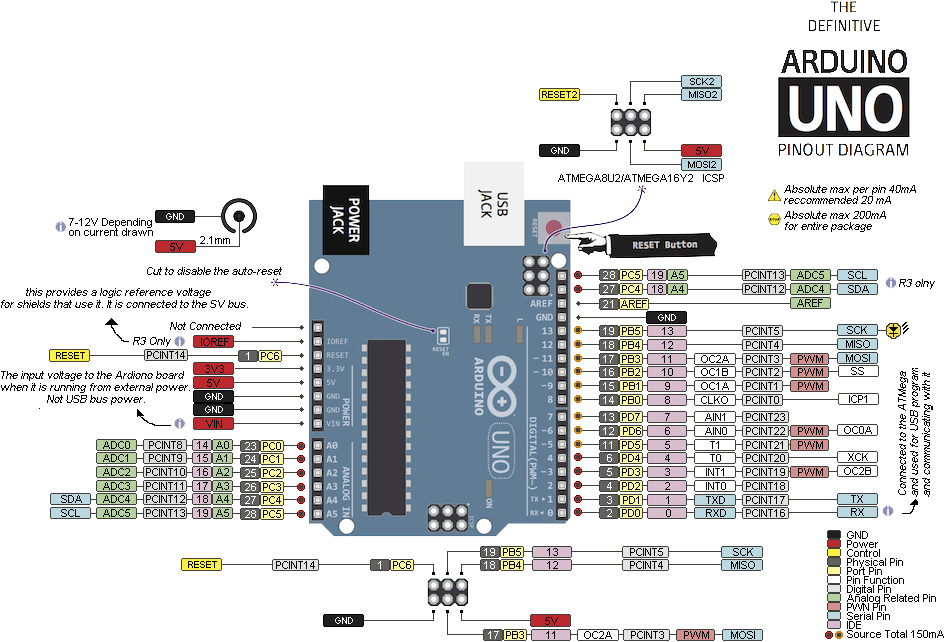
Рис. 1. Выводы Arduino UNO
Механизм прерываний реализован с использованием регистров управления, значения в которых локально включают/ выключают/ настраивают интересующие
прерывания. Также имеются регистры флагов. При наступлении события, которому суждено вызвать прерывание, флаг интересующего прерывания взводится
аппаратно, после чего, если прерывания глобально разрешены, переход к обработчику производится немедленно, а если глобально запрещены – переход к
обработчику производится по факту активного состояния интересующего флага как только прерывания будут снова разрешены.
Для глобального разрешения/запрещения прерываний используются команды sei и
cli. Кроме того, для корректной работы механизма прерываний и правильного выхода из обработчика по команде
reti обязательно необходимо настроить указатель стека SP.
Внешние прерывания осуществляются через выводы МК INT7:0. Регистр флагов внешних прерываний EIFR (External Interrupt Flag Register):
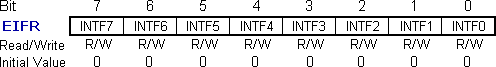
Рис. 2. Регистр флагов внешних прерываний EIFR (External Interrupt Flag Register)
Внешние прерывания локально разрешаются/запрещаются битами регистра EIMSK (External Interrupt Mask Register).
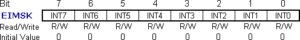
Рис. 3. Регистр разрешения внешних прерываний EIMSK (External Interrupt Mask Register)
Внешние прерывания могут генерироваться по фронту либо спаду импульса, а также по низкому либо высокому логическому уровню. Желаемый вариант
выбирается битами ISCn1, ISCn0 (Interrupt Sense Control bits) в регистрах EICRA и EICRB:
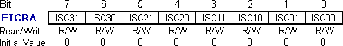

Рис. 4. Регистр управления внешними прерываниями EICRA (External Interrupt Control Register A,B)
Для реакции на спад импульса ISCn1=1, ISCn=0.
|
| Задания на лабораторную работу |
|
ЗАДАЧА 3.1. Написать программу, обеспечивающую отображение состояния клавиши, подключенной к линии i с помощью
светодиода, подключенного к линии j портов C и B (нажато – горит, отжато – не горит).
Промоделировать работу схемы в Proteus.
i, j |
0 |
1 |
2 |
3 |
4 |
5 |
6 |
7 |
№ порта,
линия |
PortC 0 |
PortC 1 |
PortC 2 |
PortC 3 |
PortC 4 |
PortC 5 |
PortB 4 |
PortB 5 |
ЗАДАЧА 3.2. Написать программу, обеспечивающую подсчёт и отображение в десятичном формате нажатий на кнопку, подключенную к линии i
портов C, D. Сброс в 0 клавишей на линии j портов C, D отладочной платформы Arduino UNO. При достижении значения счётчика числа **, значение
больше не увеличивать. Промоделировать работу схемы в Proteus. Отобразить результат в соответствии со схемой в примере:
чётные варианты: на двух семисегментых индикаторах: старший - PortD4..7, младший - PortB0..3;
нечётные варианты: на ЖКИ с контроллером HD44780 начиная с позиции k.
ЗАДАЧА 3.3. Написать программу, обеспечивающую увеличение/уменьшение десятичного счётчика в зависимости от нажатия клавиш “+” или “-”,
подключенных к линиям портов INT0, INT1 Arduino UNO. При опросе клавиш задействовать механизм внешнего прерывания. Сброс в 0 - клавишей на линии
i портов C, D. При достижении значения счётчика ** значение больше не увеличивать, а также не уменьшать менее 0. Промоделировать работу схемы
в Proteus. Отобразить результат в соответствии со схемой в примере:
чётные варианты: на ЖКИ с контроллером HD44780 начиная с позиции k;
нечётные варианты: на двух семисегментых индикаторах: старший - PortD4..7, младший - PortB0..3.
ЗАДАЧА 3.4. Написать программу, обеспечивающую работу энкодера с отображением десятичного эквивалента поворота ручки энкодера. Сброс в 0 -
клавишей на линии i портов B, C. Диапазон значения счётчика 00..**. Промоделировать работу схемы в Proteus. Отладочная платформа - Arduino
UNO.
Чётные варианты: при опросе энкодера, подключенного к линиям INT0 и INT1, задействовать механизм внешнего прерывания. Сброс вызывает
установку счётчика в середину диапазона – число **/2. Отобразить результат на двух семисегментых индикаторах: старший - PortD4..7, младший -
PortB0..3.
Нечётные варианты: при опросе энкодера не задействовать механизм внешнего прерывания. Энкодер подключен к линиям порта C, D. Сброс
вызывает установку счётчика в начало диапазона – число 00. Отобразить результат на ЖКИ с контроллером HD44780 начиная с позиции j в
соответствии со схемой в примере.
ЗАДАЧА 3.5. Написать программу, считывающую значение аналоговой величины на PortC0,1 в диапазоне 0..1023, и отображающую её на индикаторе в
диапазоне 0..**. Опорное напряжение Vref принять равным 5В. Для нечётных вариантов задействовать программный опрос флага готовности данных АЦП. Для
чётных вариантов использовать обнаружение готовности данных по прерываниям.
Чётные варианты: | | Нечётные варианты: |
| 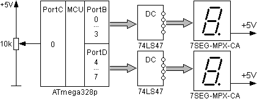 | | 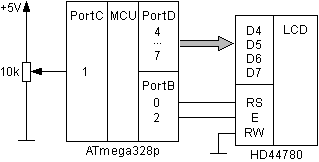 |
| Рис. 5. Схема включения для чётных вариантов | |
Рис. 6. Схема включения для нечётных вариантов |
| |
| |
Примечание: |
В отчёте по лабораторной работе привести электрические схемы устройств с указанием номеров портов, к которым
подключены кнопки и индикаторы. Таблицу векторов прерываний привести лишь для используемых векторов.
Чтобы избавиться от инерционности модели энкодера, необходимо изменить значения параметра "Effective Mass" с 0.01 на 0.001 и
параметра "Load/Max Torque %" с 50 на 80 соответственно. |
| |
| |
|
| Пример решения задачи 3.1. |
|
Составим программу, обеспечивающую отображение состояния клавиши, подключенной к линии 0 порта B, с помощью светодиода, подключенного к линии 0
порта D (нажато – горит, отжато – не горит). Промоделировать работу схемы в Proteus.
Для выполнения действий во время работы устройства алгоритм программы примет вид бесконечного цикла, который постоянно опрашивает состояние
клавиши на входе, в соответствии с этим производит вычисления, и выдаёт управляющее воздействие на выход.
При программном опросе кнопки необходимо учитывать, что она работает в инверсной логике, т.е. её нажатие вызывает появление логического нуля в
соответствующем разряде порта B. Соответствующая программа имеет вид:
.include "m328pdef.inc"
init: ldi r16, 0b00000000 ; настройка на ввод линии 0 порта B
out DDRB, r16
ldi r16, 0b00000001 ; настройка на вывод линии 0 порта D
out DDRD, r16
ldi r19, 0b00000001 ; маска для инверсии 0 бита
main: in r16, PINB
eor r16, r19 ; инвертирование 0 бита
out PORTD, r16 ; вывод на линию 0 состояния бита 0 r16
rjmp main ; организация бесконечного цикла
|
|
Модель микроконтроллерной системы Arduino для разработанной программы в среде Proteus выглядит следующим образом:
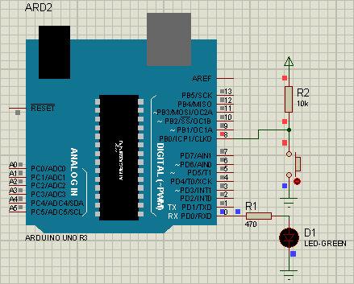
Рис. 7. Модель микроконтроллерной системы Arduino
Скачать Proteus-модель
При использовании такой схемы на практике необходимо учитывать эффект дребезга контактов кнопки, которая выражается в многократном замыкании-
размыкании цепи в момент соединения контактов. Это воспринимается как быстрая смена логических уровней сигнала, или как многократное нажатие клавиши.
Поэтому кнопку следует считать нажатой, если на входе МК в течении более чем 0,01с будет присутствовать низкий уровень.
Пример оформления электрической схемы:
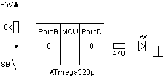
Рис. 8. Электрическая схема
|
| Пример решения задачи 3.2. |
|
Составим программу, обеспечивающую подсчёт нажатий на клавишу, подключенную к линии 5 порта C. Отобразим десятичный эквивалент количества нажатий
на семисегментном светодиодном индикаторе, подключенном к четырём старшим линиям порта D. Сброс в 0 клавишей на линии 3 порта C. При достижении
значения счётчика 9 значение больше не увеличивать. Промоделируем работу схемы в Proteus.
Для управления семисегментным индикатором 7SEG-MPX-CA целесообразно применить дешифратор, для преобразования двоичного кода, формируемого
контроллером, в управляющие сигналы, включающие отдельные светодиоды, которые соответствуют цифрам кода. В качестве такого элемента используем
микросхему 74LS47.
Модель микроконтроллерной системы Arduino для разработанной программы в среде Proteus и соответствующая программа имеют вид:
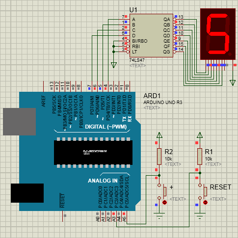
Рис. 9. Модель микроконтроллерной системы Arduino
Скачать Proteus-модель |
.include "m328pdef.inc"
init: ldi r16, 0b00000000 ; настройка на ввод порта C
out DDRC, r16
ldi r16, 0b11110000 ; настройка на вывод линий 4-7 порта D
out DDRD, r16
ldi r16,0x10 ; шаг увеличения счётчика
clr r17 ; сброс счётчика
bclr 6 ; разрешить увеличение счёта b6SREG=0
main: sbis PINC, 3 ; проверить кнопку RESET
clr r17 ; если нажата, то сброс счётчика
sbic PINC, 5 ; проверить кнопку +
rjmp off ; переход если не нажато
brbs 6, nozero ; можно увеличить счёт?
add r17, r16
nozero:bset 6 ; запретить увеличение счёта b6SREG=1
rjmp end ; обход разрешения
off: bclr 6 ; разрешить увеличение счёта
end: cpi r17, $A0 ; сравнить r17 с числом $A0
brne indic ; перейти, если r16 /= A
sub r17, r16
indic:out PORTD,r17 ; вывод
rjmp main ; организация бесконечного цикла
|
|
Для управления ЖКИ на базе популярного контроллера Hitachi HD44780 используется четырёхбитная схема включения. ЖКИ
позволяет выводить две строки по 16 символов. Для корректного вызова функций инициализации (LCD_Init) и вывода (LCD_Update) обязательно необходимо
настроить указатель стека SP. Функция вывода копирует содержимое области "видео" памяти с адреса $0200 в соответствующие позиции ЖКИ, в количестве
символов, определённом в R17. Следует иметь ввиду, что символам цифр соответствуют коды, начиная с 0x30, согласно таблицы на стр.17
документации на ЖКИ.
Модель микроконтроллерной системы Arduino для разработанной программы в среде Proteus и соответствующая программа имеют вид:
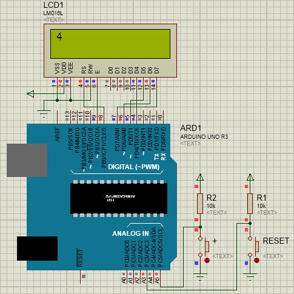
Рис. 10. Модель микроконтроллерной системы Arduino
Скачать Proteus-модель |
.include "m328pdef.inc"
init: ldi r16,Low(RAMEND);обязательная инициализация стека
out SPL,r16
ldi r16,High(RAMEND)
out SPH, r16
clr r16
out DDRC, r16 ;PortC на ввод
rcall LCD_Init ;инициализация ЖКИ
ldi r21, $30 ;символ "0"
bclr 6 ;разрешить увеличение счёта b6SREG=0
main: sbis PINC, 3 ;проверить кнопку RESET
ldi r21, $30 ;если нажата, то сброс счётчика в "0"
sbic PINC, 5 ;проверить кнопку +
rjmp off ;переход если не нажато
brbs 6, nozero ;можно увеличить счёт?
inc r21
nozero:bset 6 ;запретить увеличение счёта b6SREG=1
rjmp end ;обход разрешения
off: bclr 6 ;разрешить увеличение счёта
end: cpi r21, $3A ;сравнить r21 с числом $3A
brne indic ;перейти, если r21 /= $3A
dec r21
indic:sts 0x0200, R21
ldi r17,0x01 ;количество символов, выводимых на ЖКИ
rcall LCD_Update ;вывод на ЖКИ области ОЗУ с адреса [$0200]
rjmp main ;организация бесконечного цикла
.include "hd44780.asm" ;библиотека работы с ЖКИ. Обязательно
;подключение в конце программы
|
|
Библиотека hd44780.asm
/*
* Имя : hd44780.asm
* Описание : Это драйвер для алфавитно-цифрового LCD HD44780
* Таблица команд:
*DB7 DB6 DB5 DB4 DB3 DB2 DB1 DB0 Значение
*0 0 0 0 0 0 0 1 Очистка экрана. Счетчик адреса на 0 позицию DDRAM
*0 0 0 0 0 0 1 - Адресация на DDRAM сброс сдвигов, Счетчик адреса на 0
*0 0 0 0 0 1 I/D S Настройка сдвига экрана и курсора
*0 0 0 0 1 D C B Настройка режима отображения
*0 0 0 1 S/C R/L - - Сдвиг курсора или экрана, в зависимости от битов
*0 0 1 DL N F - - Выбор числа линий, ширины шины и размера символа
*0 1 AG AG AG AG AG AG Переключить адресацию на SGRAM и задать адрес в SGRAM
*1 AD AD AD AD AD AD AD Переключить адресацию на DDRAM и задать адрес в DDRAM
Значение отдельных бит:
I/D — инкремент/декремент счётчика адреса. По дефолту 0 — Декремент. Т.е. каждый следующий
байт будет записан в n-1 ячейку. Если I/D=1 — Инкремент.
S — сдвиг экрана. При S=1 с каждым новым символом будет сдвигаться окно экрана, пока не
достигнет конца DDRAM. Удобно при выводе на экран длинной строки, на все 40 символов,
чтобы не убегала за экран.
D — включить дисплей. При D=0 изображение исчезнет, при этом в DDRAM можно готовить следующую
строку. А чтобы картинка появилась в эту позицию надо записать 1.
С — включить курсор в виде прочерка. 1 — курсор включен
B — сделать курсор в виде мигающего черного квадрата.
S/C — сдвиг курсора или экрана. Если стоит 0, то сдвигается курсор. Если 1, то экран. По одному
разу за команду
R/L — направление сдвига курсора и экрана. 0 — влево, 1 — вправо.
D/L — ширина шины данных. 1-8 бит, 0-4 бита
N — число строк. 0 — одна строка, 1 — две строки.
F — размер символа 0 — 5х8 точек. 1 — 5х10 точек (встречается крайне редко)
AG — адрес в памяти CGRAM
АD — адрес в памяти DDRAM
*/
.include "m328pdef.inc"
.def tim1=r19 ; счетчик цикла 1
.def tim2=r20 ; счетчик цикла 2
.equ LCDdat_PORT = PORTD
.equ LCDdat_DDR = DDRD
.equ LCDctrl_PORT = PORTB
.equ LCDctrl_DDR = DDRB
.equ LCD_D4 = 4
.equ LCD_D5 = 5
.equ LCD_D6 = 6
.equ LCD_D7 = 7
.equ LCD_RS = 0 ;линия PD4 для формирования сигнала RS
.equ LCD_EN = 1 ;линия PD2 для формирования сигнала E
;******** ВЫВОД ОБЛАСТИ ОЗУ С АДРЕСА [$0200] 16 СИМВОЛОВ НА LCD **********
;Входной параметр: в r17 количество выводимых символов
LCD_Update:
ldi r16,0b10000000 ;Задать адрес в DDRAM 80 - 0-й, С0 - 1-й
rcall Wait5ms;
rcall LCD_Cmd1_2Byte ;Отправка команды на LCD полубайтом
rcall Wait5ms;
ldi R31,$02 ;Z=$0200
clr R30
m2: ld r16,Z+ ;r16=[$0200]
rcall LCD_SendDat
rcall Wait38ms
dec R17
cpi R17,0
brne m2
ret
;****************************ИНИЦИАЛИЗАЦИЯ ЖК-МОДУЛЯ**********************
LCD_Init:
sbi LCDdat_DDR,LCD_D4
sbi LCDdat_DDR,LCD_D5
sbi LCDdat_DDR,LCD_D6
sbi LCDdat_DDR,LCD_D7
sbi LCDctrl_DDR,LCD_RS
sbi LCDctrl_DDR,LCD_EN
rcall Wait38ms;
rcall Wait38ms;
rcall Wait38ms;
rcall Wait38ms;
rcall Wait38ms;
rcall Wait38ms;
ldi R16,$30 ;установка функции 8 разрядов 1-й раз.....
rcall LCD_Cmd1Byte ;отправка команды на LCD одним байтом
rcall Wait38ms ;
rcall LCD_Cmd1Byte ;8 разрядов 2-й раз... отправка команды на LCD
rcall Wait38ms ;
ldi R16,$20 ;установка шины на 4 разряда
rcall LCD_Cmd1Byte ;отправка команды на LCD одним байтом
rcall Wait38ms
ldi R16,$20 ;установка шины на 4 разряда
rcall LCD_Cmd1_2Byte ;отправка команды на LCD полубайтом
rcall Wait38ms;
ldi R16,0b00101000 ;шина 4 разряда, 2 строчный индикатор, матрица 5х8
rcall LCD_Cmd1_2Byte ;отправка команды на LCD полубайтом
rcall Wait38ms;
ldi R16,0b00001000 ;отключение индикаторва, курсора, мерцания
rcall LCD_Cmd1_2Byte ;отправка команды на LCD полубайтом
rcall Wait38ms;
ldi R16,0b00000001 ;очистка экрана и установка курсора в начало первой строки
rcall LCD_Cmd1_2Byte ;отправка команды на LCD полубайтом
rcall Wait38ms;
ldi R16,0b00000110 ;режим инкремента адреса, без сдвига
rcall LCD_Cmd1_2Byte ;отправка команды на LCD полубайтом
rcall Wait38ms;
ldi R16,$0C ;включить LCD, отключить курсор, отключить мерцание
rcall LCD_Cmd1_2Byte ;отправка команды на LCD полубайтом
ret
LCD_WriteNibble:
sbrs R16, 4
cbi LCDdat_PORT,LCD_D4
sbrc R16, 4
sbi LCDdat_PORT,LCD_D4
sbrs R16, 5
cbi LCDdat_PORT,LCD_D5
sbrc R16, 5
sbi LCDdat_PORT,LCD_D5
sbrs R16, 6
cbi LCDdat_PORT,LCD_D6
sbrc R16, 6
sbi LCDdat_PORT,LCD_D6
sbrs R16, 7
cbi LCDdat_PORT,LCD_D7
sbrc R16, 7
sbi LCDdat_PORT,LCD_D7
ret
;****************** ПОДПРОГРАММА ПЕРЕДАЧИ КОМАНДЫ В ЖК-МОДУЛЬ *************
LCD_Cmd1_2Byte:
cbi PORTB,LCD_RS ; устанавливаем RS=0 (команда);
rcall LCD_Send1_2Byte
ret
;****************** ПОДПРОГРАММА ПЕРЕДАЧИ ДАННЫХ В ЖК-МОДУЛЬ *************
LCD_SendDat:
sbi PORTB,LCD_RS ; устанавливаем RS=1 (данные);
rcall LCD_Send1_2Byte
ret
LCD_Send1_2Byte: ;выдача полубайта
sbi LCDctrl_PORT,LCD_EN ;E=1
rcall LCD_WriteNibble ;Выставили в порт старшую тетраду
cbi LCDctrl_PORT,LCD_EN ;E=0
swap r16
sbi LCDctrl_PORT,LCD_EN ;E=1
rcall LCD_WriteNibble ;Выставили в порт младшую тетраду
cbi LCDctrl_PORT,LCD_EN ;E=0
ret
;****************** ПОДПРОГРАММА ПЕРЕДАЧИ КОМАНДЫ В ЖК-МОДУЛЬ *************
LCD_Cmd1Byte:
cbi LCDctrl_PORT,LCD_RS ;устанавливаем RS=0 (команда);
rcall LCD_WriteNibble
sbi LCDctrl_PORT,LCD_EN ;E=1
cbi LCDctrl_PORT,LCD_EN ;E=0
clr R16
ret
;********************** ПОДПРОГРАММЫ ЗАДЕРЖКИ *****************************
Wait50us: ; задержка 50мкс
ldi tim1,65
Wait51:
dec tim1 ; 1такт
brne Wait51 ; 2такта и 1такт на выходе
ret ; 4 такта Итого 195 тактов 0,0000121875 сек для F_CPU=16МГц 12,18мкс
Wait150us: ; задержка 150мкс
rcall Wait50us
rcall Wait50us
rcall Wait50us
ret ;0,0000375 сек (37.5мкс)
Wait5ms: ; задержка 5мс
ldi tim2,100 ; загрузка счётчика
Wait501: rcall Wait50us
dec tim2
brne Wait501
ret
Wait38ms: ; задержка 38мс
ldi tim2,0 ; загрузка счётчика
Wait381:
rcall Wait150us
dec tim2
brne Wait381
ret
Примеры оформления электрической схемы:
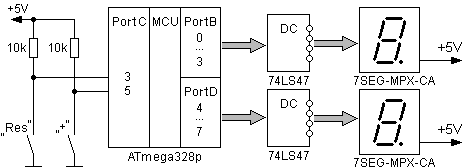 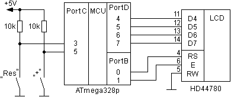
Рис. 11. Электрические схемы для 7-сегментных индикаторов и ЖКИ
|
| Пример решения задачи 3.3. |
|
Для работы с прерываниями необходимо описать таблицу векторов для данного типа МК через директивы ассемблера
.org. Из документации на МК ATmega328p следует, что внешние прерывания
INTx имеют адреса $0002, $0004. При этом INT0 принимается с линии порта PD2 микроконтроллера, а INT1 – c PD3 соответственно. Для желаемых INTx по
заданным адресам записывается команда перехода на обработчик jmp Exp_INT. Подпрограмма-обработчик должна
быть как можно короче и обязательно заканчиваться командой reti. Основная программа начинается с метки
Reset, где настраивается указатель стека и внешние прерывания разрешаются локально (регистр EIMSK), а также
условие срабатывания по спаду входного сигнала в регистре EICRA (адрес в пространстве ввода/вывода 0x69).
Модель микроконтроллерной системы Arduino для разработанной программы в среде Proteus и соответствующая программа имеют вид:
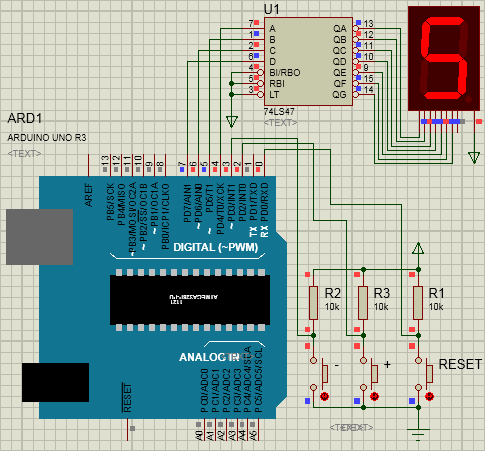
Рис. 12. Модель микроконтроллерной системы Arduino
Скачать Proteus-модель |
.include "m328pdef.inc"
.cseg
.org $0000 jmp RESET ;(Reset)
.org $0002 jmp Ext_INT0 ;(INT0) External Interrupt Request 0
.org $0004 jmp Ext_INT1 ;(INT1) External Interrupt Request 1
.org INT_VECTORS_SIZE ;Конец таблицы прерываний
Ext_INT0: ;Обработчик прерывания по входу INT0
add r17,r16 ;Счётчик++
cpi r17, 0xA0 ;Сравнить r17 с числом A0
brne ret0 ;Перейти, если r17 /= A0
sub r17,r16 ;Счётчик--
ret0: reti ;Выход из обработчика прерывания
Ext_INT1: ;Обработчик прерывания по входу INT1
sub r17,r16 ;Счётчик--
cpi r17, 0xF0 ;Сравнить r17 с числом F0
brne ret1 ;Перейти, если r17 /= F0
add r17,r16 ;Счётчик++
ret1: reti ;Выход из обработчика прерывания
Reset:ldi r16,Low(RAMEND) ;Старт программы
out SPL,r16 ;Обязательная инициализация стека
ldi r16,High(RAMEND);Указатель стека устанавливается
out SPH,r16 ;на конец ОЗУ
ldi r16,0b00000011 ;Разрешить прерывания
out EIMSK,r16 ;INT0 и INT1 локально
ldi r16,0b00001010 ;Настройка условия генерации прерывания
sts EICRA,r16 ;по спаду входного сигнала
sei ;Разрешить прерывания глобально
ldi r16,0b11110000 ;Настройка на вывод линий 4..7
out DDRD,r16 ;и на ввод линий 0..3 порта D
clr r17 ;Сброс счётчика
ldi r16,0b00010000 ;1
main: sbis PIND,0 ;Проверить кнопку RESET
clr r7 ;Если нажата, то сброс счётчика
andi r17,0b11110000
out PORTD,r17 ;Вывод
rjmp main
|
|
Пример оформления электрической схемы:
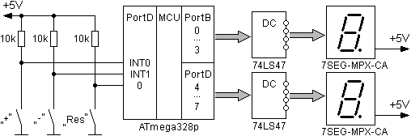
Рис. 13. Электрическая схема
|
| Пример решения задачи 3.4. |
|
Энкодер – это датчик угла поворота оси, который имеет две контактные пары, формирующие при вращении его ротора две импульсные последовательности,
сдвинутые на 90°. По этому сдвигу можно судить о направлении вращения энкодера.
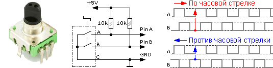
Рис. 14. Энкодер. Схема подключения. Диаграммы сдвига.
На диаграмме показана зависимость выходов А и В друг от друга при вращении энкодера по часовой или против часовой стрелки.
Всякий раз, когда по прерыванию INT0 сигнал А переходит от нуля к положительному уровню, необходимо считывать значение выхода В. Если B в этот
момент находится в положительном состоянии, значит энкодер вращается по часовой стрелке, иначе – против часовой стрелки. В зависимости от полученного
результата увеличивается или уменьшается значение счётчика.
В случае невозможности задействовать внешние прерывания, к примеру, при всех занятых входах прерываний, либо когда события энкодера происходят
достаточно редко целесообразно организовать программный опрос такого датчика. В этом случае при вращении энкодера возникает меняющийся код:
10 = 2
00 = 0
01 = 1
11 = 3
10 = 2
Поэтому задача сводится к циклическому опросу линий A и B и сравнении текущего состояния с новым. Сам опрос представляет собой конечный автомат с
текущим состоянием и двумя возможными следующими. Алгоритм такого конечного автомата можно продемонстрировать на языке С. Напишем программу,
обеспечивающую работу энкодера с отображением десятичного эквивалента поворота ручки энкодера. Сброс в 0 - клавишей на линии 2 порта D.
Промоделируем работу схемы в Proteus. При опросе энкодера обойдемся без механизма внешнего прерывания. Результат отобразим на семисегментном
индикаторе, подключенном к порту D.
Модель микроконтроллерной системы Arduino для разработанной программы в среде Proteus использует энкодер на валу двигателя и выглядит следующим
образом:
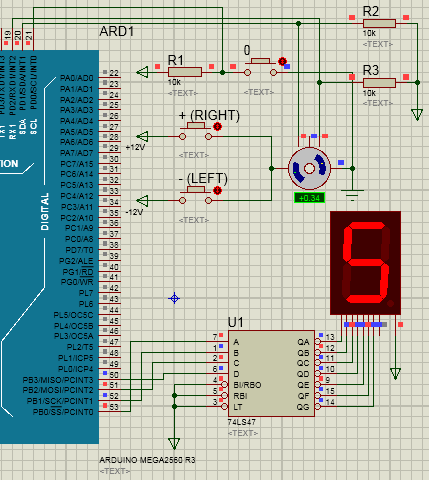
Рис. 15. Подключение энкодера
Скачать Proteus-модель |
//Энкодер - линии 0,1 порта D. Сброс - линия 2 порта D
#include <avr/io.h>
//глобальные переменные u08
uint8_t EncState=0; //предыдущее состояние энкодера
uint8_t EncData=0; //счётный регистр энкодера
void EncoderScan(void)
{
int New = PIND & 0x03;
// текущее значение New сравниваем со старым EncState
// смотря в какую сторону оно поменялось - увеличиваем
// или уменьшаем счётный регистр EncData
switch(EncState) {
case 2: {
if(New == 3) EncData++;
if(New == 0) EncData--;
break;
}
case 0: {
if(New == 2) EncData++;
if(New == 1) EncData--;
break;
}
case 1: {
if(New == 0) EncData++;
if(New == 3) EncData--;
break;
}
case 3: {
if(New == 1) EncData++;
if(New == 2) EncData--;
break;
}
}
EncState = New; //записать новое значение предыдущего состояния
}
int main(void) //начало основой программы
{
DDRD=DDRD & 0b11111000; //линии 0..2 порта D будут входами
PORTD=PORTD & 0b00000111; //подключить подтягивающие резисторы
DDRB=0x0F; //линии 0..3 порта B будут выходами
while(1)
{
EncoderScan();
if ( !(PIND & 0x04)) EncData=0; //сброс при нажатии на кнопку RESET
PORTB=EncData;
}
return 0;
}
|
|
Пример оформления электрической схемы:
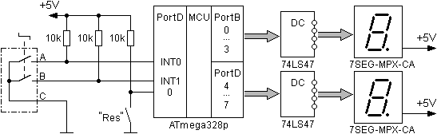
Рис. 16. Электрическая схема
|
| Пример решения задачи 3.5. |
|
Пример тут
|